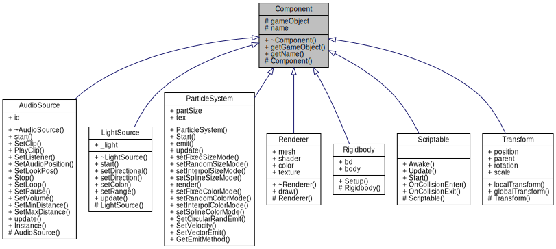

Game Engine
Engine Classes
The structure of this game engine is similar to that of Unity. As seen on the class diagram (see figure 1), it uses a scene structure, with the game objects themselves being loaded through a .json-file. The engine supports a number of components, which can be added to or removed from a specific game object. The engine also supports multiple scriptable components attached to a single game object.
GameObject
A game object is the base class for all entities, which are the things we want to draw and manipulate in our game world. A game object contains a number of components, each containing various information about the game object, for instance transform, various scripts and the physics of the object.
Component
A component is the base class for everything which is to be attached to a game object. This includes components to determine the rotation and size of a game object, its physics as well as scripts and others.
AudioSource
The engine uses the irrKlang-library to imitate 3D sounds in the game world. This component contains a single irrKlang-device, to which Audio sounds are added.
LightSource
The engine can currently create directional- or point-lights. To create a light, it must be given a direction, a colour and a range of the light. The position of the light is dependent on the game object the LightSource-component is attached to. Lights are created using the SimpleRenderEngine, and any limitations this must have (such as number of possible active lights) are applicable to this engine. It is currently possible to change either the colour or range of a specific light, as well as its type during runtime.
ParticleSystem
A simple system to emit particles. The system contains methods to change the colour, size and velocity of the current particles. The colour and size can either be static, differ randomly between two values, change linearly over time from one value to another, or change following a Catmull-Rom spline. The particles can be set to emit in either a random direction 360° around the game object the system is attached to, or in the direction of a given glm::vector3. To set the direction to a vector, however, the method needs to be called after starting the system, as the system uses circular random as standard.
Renderer
A renderer is a component and is what draws the game object, making it appear on the screen. It contains the colour of the game object, and has access to transform components for drawing the game object.
Rigidbody
A game object with a rigidbody has physics imposed on it. The engine supports either dynamic, static or kinematic rigidbodies. Rigidbodies can be either boxes or circles. The engine utilizes Box2D to create physics.
Scriptable
To make the engine more dynamic, we have created a scriptable component. This enables multiple, unique scripts to be written and attached to each game object. An example could be a CharacterController, which allows gameObjects to move accordingly to the script. The scriptable component currently contains an Awake, Start and Update method. Awake() is called when the game object is created, Start() is called when the game object is initialized and Update() is called every frame. Scripts can currently only be written in C++.
Transform
All GameObjects are created with a Transform Component, and it includes the position, rotation and scale of an object. These values can then be manipulated to change the appearance and position of the game object.
PhysicsManager
The physics manager contains the physics world in which all Rigidbody fixtures are contained. It is used to step the physics for all fixtures from the Engine loop. It also has methods which gets called when two colliders either begin touching each other or just before they leave each other. This in turns checks if any of the colliders have any scripts attached, and if they do, calls their OnCollisionEnter() or OnCollisionExit(), respectively.
Scene
The scene is the “game world”. All game objects are stored in the scene. Game objects can either be added or removed from a scene, as well as get a specific game object currently contained in the scene. It is also possible to get all the game objects currently stored in a scene.
SceneParser
The engine utilizes picojson to read game objects from a .json-file, creating and storing them in a scene. Each game object read from a .json-file must contain:
- A unique ID
- A name
- Name of the mesh type
- Color
- Position
- Rotation
- Scale
- ParentID, 0 if it has no parent
- Bounce value
- Density
- Fixture, which can be set to "NOFIXTURE", "DYNAMIC", "STATIC" or "KINEMATIC"
Engine
The engine class is what ties the actual engine together. It contains the main game loop, where all components and scripts are updated. It also contains the method called when loading a scene, and contains the actual scene, keeping information of all the current game objects in the scene. This class is also responsible for initializing and loading the SimpleRenderEngine as well as dear imgui. The Awake() and Start() methods of scripts are also called from this class. All inputs from the InputManager is handled within this class, and it also controls if the debug window should be shown. The debug windows contains information regarding the applications current usage of RAM and virtual memory, as well as high water marks for these. Furthermore, it is possible to view the unique ID of each game object, as well as all components currently attached to it.
Particle
Particles are used by the particle system. Each particle contains their current position, their velocity and the time of which they were created.
Audio
Audio is a wrapper class, containing the actual clip to be played by the called AudioSource-component. This is so users of our engine won’t have to interact with irrKlang themselves.
CameraHandler
The camerahandler, while not a component in itself, can be accessed and used to manipulate the camera of the world. All interaction with the camera is done through this class, and it contains methods to change the projection of the camera between orthographic and perspective. Furthermore, the specific area the camera should look at can also be changed. Lastly, it also allows the possibility of following a specific game object.
InputManager
The engine contains a singleton input manager. The manager uses SDL_events to handle key inputs. This is done by setting a bool to true when a key is pressed and held down, and false as soon as the key is released.
LeakDetection
The engine currently supports the possibility of keeping track of a number of things, including:
- Total RAM on the machine
- Current RAM free on the machine
- Current RAM used by the machine
- Current RAM used by the application/game
- Total virtual memory on the machine
- Current virtual memory used by the application/game
These statistics are available on both Windows- and macOS-computers. However, as stated during the "Engine"-paragraph, the debug window currently only shows the current RAM and virtual memory usage of the application.
PlayerPrefManager
The player preferences manager is used to save and load values set by the user. It is currently possible to store both integers, doubles, strings and booleans. It is also possible to check if a value is present in the loaded file. The manager uses a given organisation name and application name, given to SDL_GetPrefPath(), to determine the file path of the preferences file. Files are stored as .json-files using picojson.
SpriteAtlas
This class loads a texture atlas from a .json file utilizing picojson. A map is used to contain all the sprites, with the name of the sprite being the key.
Sprite
The class containing the actual sprites. This class slices the texture atlas, based on given parameters, and saves the sprite in the map of the spriteatlas class.
Utility
The utility class is currently used by the SpriteAtlas class to load .json-files as strings using picojson.
Demonstrations
To showcase the engine, multiple demonstration-programs have been made. There are a total of three demonstrations, displaying:
- Physics
- Particles
- 3D Audio
Furthermore, a platformer game has been made to show multiple features of the engine in one application.
Performance
As the engine utilizes SimpleRenderEngine, the engine itself is limited in performance to the same performance as SimpleRenderEngine when it comes to rendering a certain amount of game objects.
We have found that on a computer with X specifications, the number of frames per seconds starts dropping when there are X game objects in the scene.
Discussion
The game engine is currently working, as it allows developers to create games, albeit somewhat simple.
To improve the engine, a number of features could be implemented. This would also allow for the creation of more complex games. Some of the features this group would like to see implemented include:
A method for unloading/destroying scenes
As it is now, the developer will manually have to delete every game object contained in a scene before loading a new one. Otherwise, the new game objects might overwrite the old ones, and the game objects not overwritten from the old scene can be found in the new. A method specifically to destroy a scene could be created, or the logic could be implemented in the current method for loading scenes, automatically resetting the scene before adding game objects.
Expand the possible file formats which can be loaded
Currently only .json-files can be loaded, and meshes can only be either cubes spheres or planes. A possible file format to load could be .obj.
Not drawing objects outside the cameras vision
To optimize performance, objects outside the view of the camera could be omitted from being drawn. This ensures fewer objects will be drawn in most cases.
Expand possible scripting languages
The engine currently support scripts written in C++. However, to give a greater ease of use and appeal, it would be ideal to expand this to include languages such as JavaScript, C# or Lua.
3D Physics
While the engine itself can be used to make games in 3D, the current physics system utilized is only applicable to 2D. As such, 3D games created using our engine cannot contain physics.
Easier to animate sprites
As it is right now, the only way to animate sprites is through a script. This means the developer will have to get every single sprite, wait the appropriate time and draw the new sprite through a script attached to the corresponding game object.
Shadows
More complex graphics features, such as shaders and shadows, would be a nice addition to the engine, as this could give more realism to games.
Networking
It would also be ideal to implement some sort of networking, making the engine capable of creating online games.
User Interface
Currently, the engine can only show a hardcoded user interface when run in debug mode. Creating the possibility of adding UI elements to a game would be greatly beneficial, to create elements such as a start screen or pause screen.
Performance
As mentioned, after spawning X number of game objects in the world, the framerate starts dropping. While this could possibly be due to performance constraints from SimpleRenderEngine, there might still be ways to improve the performance of our engine. As stated earlier, objects outside the view of the camera can be omitted from being drawn. Further more, some game objects could be destroyed after reaching a certain number of objects in the scene. But by using this method, means to prevent important game objects from being destroyed will then have to be taken.
Lastly, performance of the engine can always be optimized. But given the time constraints and limited scope of this project, the group believes the engine has an acceptable performance as is.
Who did what?
Daniel:
- PlayerPrefs
- AudioSource
- AudioDemo
- InputManager
- Particle Demo
Johan:
- PhysicsDemo
- CameraHandler
- SpriteAtlas
- Sprite
- Game
Niels:
- Audio
- AudioSource
- InputManager
- LightSource
- Documentation
- PhysicsManager - OnCollionEnter/OnCollisionExit
- Game
Hvem lavede PhysManager og RigidBody?
Daniel, Johan & Niels:
- Component
- Engine
- GameObject
- LeakDetection
- Particle
- ParticleSystem
- Renderer
- RigidBody
- Scene
- Scriptable
- Transform
- etc.